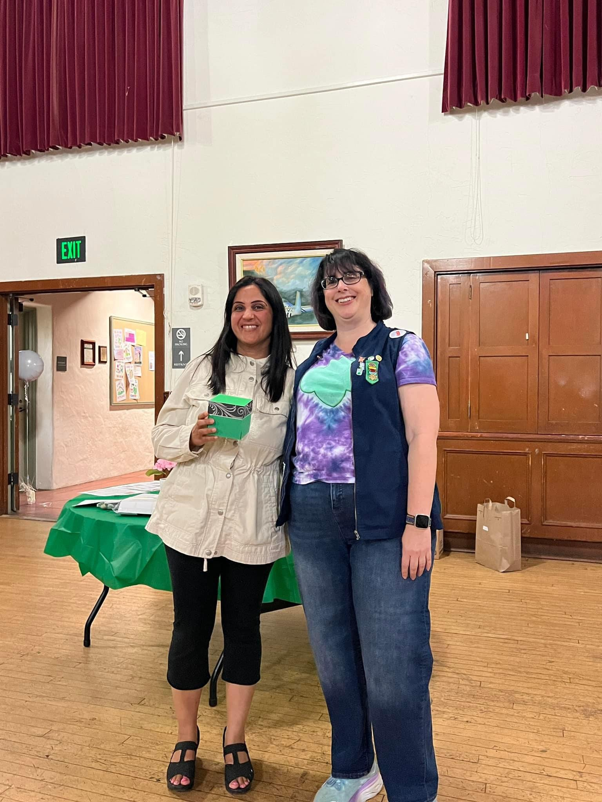
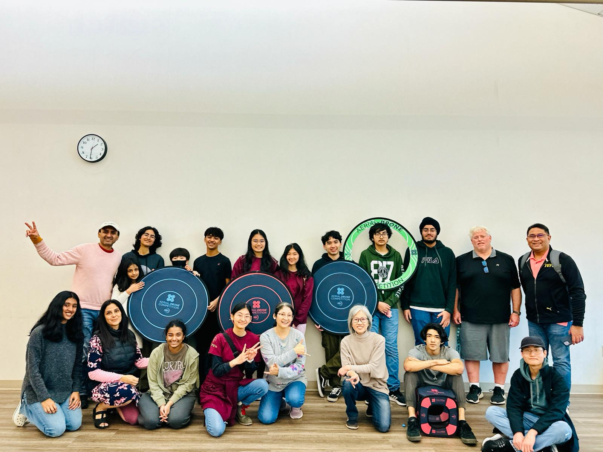
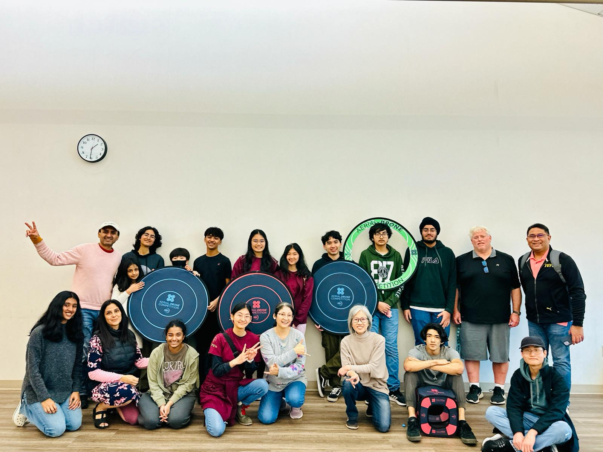
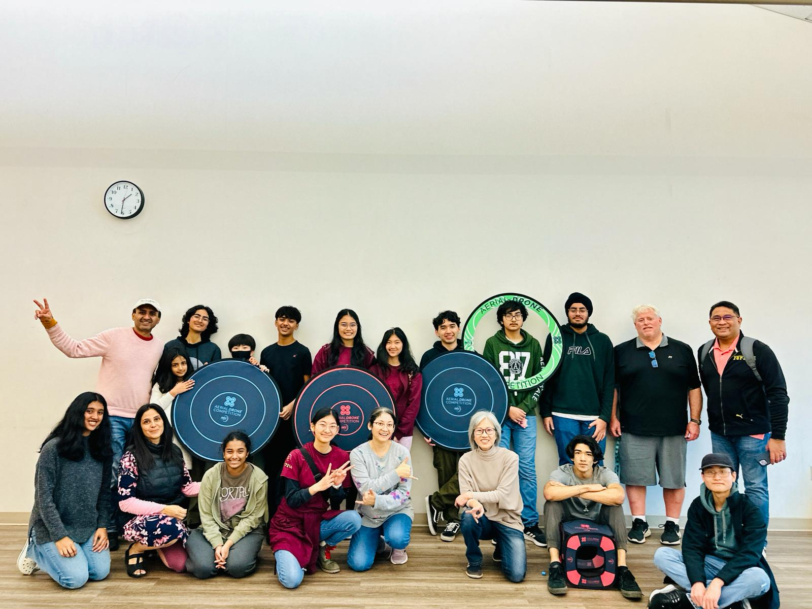

I enjoy serving the community via small acts such as the following, thus also feeding into my desire to make this world a better place to live:
- Girl Scouts Troop Leader: Have been leading a Girl Scouts troop, guiding young girls in developing leadership skills, teamwork, and a sense of community responsibility. Organize educational activities and outings that fostered personal growth and learning.
Have received an ‘Excellence in Volunteering’ award from Girl Scouts for the same. - Robotics Coach for Robotics Education and Competition (REC) Foundation: Coach a robotics team in the REC Foundation, inspiring students to explore STEM fields through hands-on learning and competition.
Have hosted the very first tournament for Northern California teams - in Newark city! - Foreign Language Teacher at CMSJ, Fremont: Teach foreign language classes, sharing my linguistic knowledge and cultural insights with students.
- Active and Involved Parent working alongside School administration: Play an active role in my children's education by participating in school activities and supporting the school administration.
Facilitate interactions with national/international level external programs such as Mathematical Olympiads for Elementary and Middle Schools (MOEMs) and Math Counts, enhancing students' learning opportunities and academic achievements. - Senior Activities Facilitator at ICC, Milpitas: Foster an environment for immigrating seniors who are looking to create bonds in a new country - via the social and cultural norms they are comfortable with.

 

